前言
简单介绍编程语言==(以上第一课内容)==
第一讲 Windows程序内部运行原理
MSDN–>微软开发帮助文档
1.Windows编程模型
C、C++ –>面向过程的编程
面向对象的编程
1.警觉式(主动轮询,自身判断,过程驱动)
2.宽心式
3.托付式(被动等待对象,取决于事件发生,事件驱动)
入口(WinMain) –> 生命诞生
窗口 –> 躯干、肉身
消息循环 –> 心脏
窗口过程(回调) –> 大脑(一个大的选择结构)
操作系统为程序建立消息队列–>存放与窗口有关的消息–>程序通过消息循环不断地从消息队列里取出消息并进行响应。
句柄(Handle) –>资源的标识
图标句柄(HICON)、光标句柄(HCURSOR)、窗口句柄(HWND)、应用程序实例句柄(HINSTANCE)，操作系统给每个窗口指定唯一的一个标识号即窗口句柄。
用宏定义把消息标识号重新定义成WM_形式，方便辨识。
宏定义可以让变量具有语义信息。==(以上第二课内容)==
2.编写Windows应用程序的要素
1.入口WinMain
int WinAPI WinMain(
HINSTANCE hInstance, //当前应用程序实例句柄
HINSTANCE hPrevInstance, //前一个实例句柄,Win32下为NULL
LPSTR lpCmdLine, //命令行参数,char型
Int nCmdShow //窗口的显示状态(正常，隐藏，最小化等)
)WinAPI表示WinMain的调用方式.
WinMain的四个参数和调用方式都不能省略。
2.创建窗口
1) 设计图纸[怎么去设计] –> 窗口类
typedef struct _WNDCLASS {
UINT style; //窗口类样式
WNDPROC lpfnWndProc; //窗口过程指针
int cbClsExtra; //窗口类附加内存字节数，通常为0
int cbWndExtra; //窗口附加内存字节数，通常为0
HINSTANCE hInstance; //应用程序的实例句柄
HICON hIcon; //标题栏图标
HCURSOR hCursor; //光标
HBRUSH hbrBackground; //设置窗口背景颜色
LPCTSTR lpszMenuName; //菜单资源名称
LPCTSTR lpszClassName; //窗口类名称
} WNDCLASS, *PWNDCLASS; 2) 审批注册[Windows操作系统批准]
ATOM RegisterClass(
CONST WNDCLASS *lpWndClass // class data
);3) 生产
HWND CreateWindow(
LPCTSTR lpClassName, //已注册的窗口类名称,操作系统提供了现成的图纸,也可以自己编写图纸
LPCTSTR lpWindowName, //窗口标题栏中显示的文本,自己设定
DWORD dwStyle, //窗口样式,个性化设定
int x, //水平坐标
int y, //垂直坐标
int nWidth, //宽度
int nHeight, //高度
HWND hWndParent, //父窗口句柄
HMENU hMenu, //菜单句柄
HANDLE hInstance, //应用程序实例句柄
PVOID lpParam //用于多文档的附加参数
); CreateWindow中 (0,0)默认在桌面的左上角
菜单不是窗口！！！
4) 发布
==(以上第三课内容)==
Win32 Application和 Win32 console Application区别：
Win32:使用WinAPI
Console:不能使用GUI(图形)API
且二者入口不同
编写程序
#include
LRESULT CALLBACK MyWndProc(
HWND hwnd,
UINT uMsg,
WPARAM wParam,
LPARAM lParam
);
int WINAPI WinMain(
HINSTANCE hInstance, // handle to current instance
HINSTANCE hPrevInstance, // handle to previous instance
LPSTR lpCmdLine, // command line
int nCmdShow // show state
)
{
// 2. 创建窗口
// 2.1 设计一个窗口类
WNDCLASS MyWnd;
MyWnd.cbClsExtra = NULL;
MyWnd.cbWndExtra = NULL;
MyWnd.hbrBackground = (HBRUSH)GetStockObject(BLACK_BRUSH);
MyWnd.hCursor = LoadCursor(NULL,IDC_CROSS);
MyWnd.hIcon = LoadIcon(NULL,IDI_QUESTION);
MyWnd.hInstance = hInstance; //应用程序实例句柄
MyWnd.lpfnWndProc = MyWndProc;//指向窗口过程的指针
MyWnd.lpszClassName = "Hello";
MyWnd.lpszMenuName = NULL;
MyWnd.style = CS_HREDRAW | CS_VREDRAW;
RegisterClass(&MyWnd); //注册图纸
HWND hWnd;//定义窗口句柄,但是还没创建窗口
hWnd = CreateWindow("Hello","Windows编程",WS_OVERLAPPEDWINDOW,CW_USEDEFAULT,CW_USEDEFAULT,CW_USEDEFAULT,CW_USEDEFAULT,NULL,NULL,hInstance,NULL);
ShowWindow(hWnd,SW_SHOW);
UpdateWindow(hWnd);
return 0;
}
//4.窗口过程
LRESULT CALLBACK MyWndProc(
HWND hwnd, //来自哪一个窗口
UINT uMsg, //窗口名称
WPARAM wParam, //附加参数
LPARAM lParam //附加参数
)
{
return DefWindowProc(hwnd,uMsg,wParam,lParam);
} 以上程序运行会闪退，缺少消息循环。
GetMessage从线程的消息队列中取出消息,取出的消息保存在事先定义好的消息的结构体对象中。
GetMessage取到除WM_QUIT外的消息均返回非0，只有在接收到WM_QUIT消息时，才会返回0.
GetMessage从消息队列Get消息,返回值实际上有三种可能。
- 返回0,Get到WM_QUIT消息
- 返回-1,异常.Get失败
- 返回非0,非-1(成功Get消息,且不是WM_QUIT消息)
- 当消息队列为空时,不返回！被挂起！
功能:从消息队列中取出一条消息并删除它(WM_PAINT消息除外);
回调(Callback)
由你设计而却由操作系统调用的。
可以运行的程序代码如下：
#include
LRESULT CALLBACK MyWndProc(
HWND hwnd,
UINT uMsg,
WPARAM wParam,
LPARAM lParam
);
int WINAPI WinMain(
HINSTANCE hInstance, // handle to current instance
HINSTANCE hPrevInstance, // handle to previous instance
LPSTR lpCmdLine, // command line
int nCmdShow // show state
)
{
// 2. 创建窗口
// 2.1 设计一个窗口类
WNDCLASS MyWnd;
MyWnd.cbClsExtra = NULL;
MyWnd.cbWndExtra = NULL;
MyWnd.hbrBackground = (HBRUSH)GetStockObject(BLACK_BRUSH);
MyWnd.hCursor = LoadCursor(NULL,IDC_CROSS);
MyWnd.hIcon = LoadIcon(NULL,IDI_QUESTION);
MyWnd.hInstance = hInstance; //应用程序实例句柄
MyWnd.lpfnWndProc = MyWndProc;//指向窗口过程的指针
MyWnd.lpszClassName = "Hello";
MyWnd.lpszMenuName = NULL;
MyWnd.style = CS_HREDRAW | CS_VREDRAW;
RegisterClass(&MyWnd); //注册图纸
HWND hWnd;//定义窗口句柄,但是还没创建窗口
hWnd = CreateWindow("Hello","Windows编程",WS_OVERLAPPEDWINDOW,CW_USEDEFAULT,CW_USEDEFAULT,CW_USEDEFAULT,CW_USEDEFAULT,NULL,NULL,hInstance,NULL);
ShowWindow(hWnd,SW_SHOW);
UpdateWindow(hWnd);
//消息循环
MSG msg;
while(GetMessage(&msg,NULL,0,0))
{
TranslateMessage(&msg); //消息解释,将虚拟消息转换为字符消息
DispatchMessage(&msg); //将消息发送到"窗口过程"
}
return 0;
}
//4.窗口过程
LRESULT CALLBACK MyWndProc(
HWND hwnd,
UINT uMsg,
WPARAM wParam,
LPARAM lParam
)
{
return DefWindowProc(hwnd,uMsg,wParam,lParam);
} DefWindowProc(hwnd,uMsg,wParam,lParam)位移不能接管的就是不能WM_QUIT消息。(==以上第四课内容==)
GetMessage
Bool GetMessage(
LPMSG lpMsg, //消息结构体指针
HWND hWnd, //窗口句柄，通常设为NULL,表示接收所有窗口消息
UINT wMsgFilterMin, //消息过滤最小值
UINT wMsgFilterMax //消息过滤最大值
); switch(uMsg)
{
case WM_DESTROY:
PostQuitMessage(0);
break;
default:
return DefWindowProc(hwnd,uMsg,wParam,lParam);
}总结:
- 用户自己不响应的消息要交给操作系统调用DefWindowProc窗口过程！
- 窗口过程中一定要出现PostQuitMessage(),只有调用这个，消息队列才会出现QUIT消息，程序才能正常退出
消息是怎么产生的？
- 交互产生,比如鼠标、键盘
- 由API产生
CreateWindow –>WM_CREATE
UpdateWindow –> WM_PAINT
DestroyWindow –> WM_DESTROY
交互产生:
点击”文件”-“退出”–>消息队列产生WM_CLOSE消息–>DefWindowProc响应WM_CLOSE消息–>调用DestroyWindow–>产生WM_DESTROY消息–>自己的WinProc响应–>调用PostQuitMessage–>产生WM_QUIT消息–>GetMessage返回0–>消息循环结束
DefWindowProc
DefWindowProc这个是默认的窗口处理，我们可以把不关心的消息都丢给它来处理。
在switch里面继续增添case框架:
switch(uMsg)
{
case WM_DESTROY:
PostQuitMessage(0);
break;
case WM_CLOSE:
if(IDYES == MessageBox(hwnd,"真的要退出吗?","退出",MB_YESNO))
DestroyWindow(hwnd);
break;
case WM_CHAR:
char str[255];
sprintf(str,"char is %d",wParam);
MessageBox(hwnd,str,"按键响应",0);
break;
case WM_LBUTTONDOWN:
HDC hDC;//句柄资源
hDC = GetDC(hwnd);
TextOut(hDC,255,100,"Hello World!",strlen("Hello world!"));
ReleaseDC(hwnd,hDC);//防止内存泄露
break;
default:
return DefWindowProc(hwnd,uMsg,wParam,lParam);
}以上代码可以产生一个窗口，点击出现”Hello world!”字样，但是拉伸窗口尺寸，文字就会消失。
窗口变为无效的时候–>消息队列产生WM_PAINT消息–>窗口重绘–>文字消失
窗口什么时候变成无效？
- 最初建立窗口的时候(CreateWindow时)
- 改变窗口尺寸的时候(在注册窗口类的时候自己定义的)
- 最小化–>恢复
- 移动出屏幕或者被其它窗口覆盖的时候
- 使用滚动条的时候
- Invalidate(调用，人为使窗口变成无效)
自己来响应WM_PAINT消息：
case WM_PAINT:
HDC hpaintDC;
PAINTSTRUCT ps;
hpaintDC=BeginPaint(hwnd,&ps);
TextOut(hpaintDC,255,50,"Hello World!",strlen("Hello World!"));
EndPaint(hwnd,&ps);
break;(==以上第五课内容==)
3.自行发送消息的两种方式
大多数消息是由操作系统产生和发送，此外我们也可以人为调用SendMessage和PostMessage来自行发送消息。
SendMessage将消息直接发送给窗口,并调用该窗口过程进行处理。在窗口过程对消息处理完毕之后,该才返回。PostMessage将消息放入与创建窗口的线程相关联的消息队列后立即返回。
case WM_RBUTTONDOWN:
SendMessage(hwnd,WM_SETTEXT,0,(LPARAM)"WZY!!"); //鼠标右键点击改变任务栏名称 SendMessage(FindWindow("Notepad",NULL),WM_SETTEXT,0,(LPARAM)"WZY!!");
//SendMessage(FindWindow("计算器",NULL),WM_SETTEXT,0,(LPARAM)"WZY!!");
break;可以用Spy++程序来查找软件对应的窗口名称。
DefWindowProc怎么对WM_PAINT消息进行响应？
(1)BeginPaint(4个功能):
1.获得一个设备描述表(Get DC)
2.重绘背景
3.窗口状态由无效重新变为有效(有效状态下PAINT消息不再产生)
4.删除消息队列中已有的WM_PAINT消息
(2)EndPaint
(3)Release DC
自己响应WM_PAINT消息,一定要配合BeginPaint来使用,不能使用Get DC队列化消息
进入消息队列–>GetMessage获得
一般是由用户交互操作产生的消息、定时器WM_TIMER、WM_QUIT
用户可以使用PostMessage或SendMessage发送消息
非队列化消息
进入窗口过程,不进消息队列
一般是由WindowsAPI产生，但其中WM_PAINT有时也可以被当作是队列化消息。但WM_SETTEXT一定是非队列化消息。
用户只能用SendMessage发送消息
第一讲的最后设计程序代码如下
#include
#include
LRESULT CALLBACK MyWndProc(
HWND hwnd,
UINT uMsg,
WPARAM wParam,
LPARAM lParam
);
int WINAPI WinMain(
HINSTANCE hInstance, // handle to current instance
HINSTANCE hPrevInstance, // handle to previous instance
LPSTR lpCmdLine, // command line
int nCmdShow // show state
)
{
// 2. 创建窗口
// 2.1 设计一个窗口类
WNDCLASS MyWnd;
MyWnd.cbClsExtra = NULL;
MyWnd.cbWndExtra = NULL;
MyWnd.hbrBackground = (HBRUSH)GetStockObject(BLACK_BRUSH);
MyWnd.hCursor = LoadCursor(NULL,IDC_CROSS);
MyWnd.hIcon = LoadIcon(NULL,IDI_QUESTION);
MyWnd.hInstance = hInstance; //应用程序实例句柄
MyWnd.lpfnWndProc = MyWndProc;//指向窗口过程的指针
MyWnd.lpszClassName = "Hello";
MyWnd.lpszMenuName = NULL;
MyWnd.style = CS_HREDRAW | CS_VREDRAW;
RegisterClass(&MyWnd); //注册图纸
HWND hWnd;//定义窗口句柄,但是还没创建窗口
hWnd = CreateWindow("Hello","Windows编程",WS_OVERLAPPEDWINDOW,CW_USEDEFAULT,CW_USEDEFAULT,CW_USEDEFAULT,CW_USEDEFAULT,NULL,NULL,hInstance,NULL);
ShowWindow(hWnd,SW_SHOW);
UpdateWindow(hWnd);
//消息循环
MSG msg;
while(GetMessage(&msg,NULL,0,0))
{
TranslateMessage(&msg); //消息解释,将虚拟消息转换为字符消息
DispatchMessage(&msg); //将消息发送到"窗口过程"
}
return 0;
}
//4.窗口过程
LRESULT CALLBACK MyWndProc(
HWND hwnd,
UINT uMsg,
WPARAM wParam,
LPARAM lParam
)
{
switch(uMsg)
{
case WM_DESTROY:
PostQuitMessage(0);
break;
case WM_CLOSE:
if(IDYES == MessageBox(hwnd,"真的要退出吗?","退出",MB_YESNO))
DestroyWindow(hwnd);
break;
case WM_CHAR:
char str[255];
sprintf(str,"char is %d",wParam);
MessageBox(hwnd,str,"按键响应",0);
break;
case WM_LBUTTONDOWN:
HDC hDC;//句柄资源
hDC = GetDC(hwnd);
TextOut(hDC,255,100,"Hello World!",strlen("Hello World!"));
ReleaseDC(hwnd,hDC);//防止内存泄露
break;
case WM_PAINT:
HDC hpaintDC;
PAINTSTRUCT ps;
hpaintDC=BeginPaint(hwnd,&ps);
TextOut(hpaintDC,255,50,"Hello World!",strlen("Hello World!"));
EndPaint(hwnd,&ps);
break;
case WM_RBUTTONDOWN:
SendMessage(hwnd,WM_SETTEXT,0,(LPARAM)"WZY!!");
SendMessage(FindWindow("Notepad",NULL),WM_SETTEXT,0,(LPARAM)"WZY!!");
//SendMessage(FindWindow("计算器",NULL),WM_SETTEXT,0,(LPARAM)"WZY!!");
break;
default:
return DefWindowProc(hwnd,uMsg,wParam,lParam);
}
return 0;//DefWindowProc(hwnd,uMsg,wParam,lParam);
} 这里有一个需要注意的就是，我原来设计的程序，点击退出，有一个提示框，问是否确认退出,我选择否结果它也退出了，困惑了很长时间。
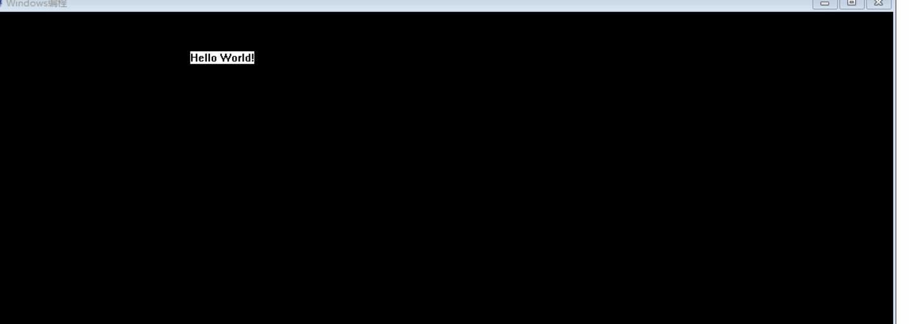
今天发现是switch选择结构外的return出了点错.
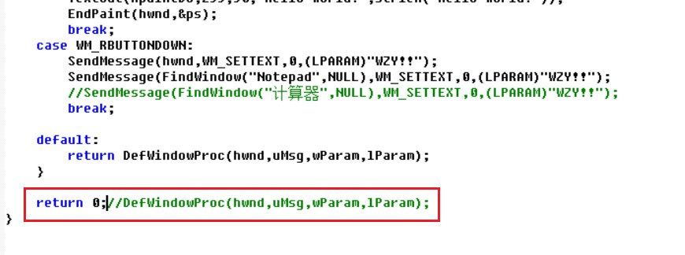
我原来写的是return DefWindowProc(),那这应该就相当于还是DefWindowProc()响应了WM_CLOSE消息,而不是我们写的case WM_CLOSE部分。
修改代码之后,运行结果如下:
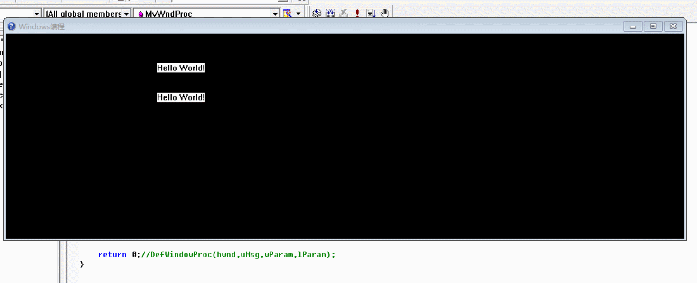
(==以上第六课内容&&第一节结束==)
第二讲 掌握C++
1.派生类的生与死问题
#include
class father
{
public:
father()
{
cout<<"father construct."< 顺序:父类创建–>子类创建–>子类析构–>父类析构
2.四种不同对象的生与死
//1.一般局部对象,在stack之中产生
void MyFunc()
{
CObject ob;//栈上产生的对象自动释放
}
//2.new局部对象,在heap中产生
void MyFunc()
{
CObject* pOb = new CObject;//堆上产生的对象需要用delete手动释放
}
//3.全局对象(静态对象)
CObject ob //在任何范围之外做此操作
//4.局部静态对象，在范围内的一个静态对象
void MyFunc()
{
static CObject ob;
}构造顺序:
全局对象–>Main–>一般局部对象–>new局部对象–>静态局部对象
析构顺序:
一般局部对象–>new局部对象–>静态局部对象–>全局对象
3.重载
重载条件:两个的名相同,的参数类型、参数个数不同，才能构成的重载。
1.只有的返回类型不同是不能构成的重载的。
如：void output() 与 int output()
2.要注意带有默认参数的这种情况，也不能构成重载。
如：void output(int a,int b=5)与void output(int a)4.引用与指针的比较
引用是C++中的概念。
int m;
int &n = m;
则n是对m的引用，注意：n既不是m的拷贝，也不是指向m的指针，n就是m自己。
对比指针：
int m;
int *pM =&m;不同点:
1.引用被创建的同时必须被初始化;指针则可以在任何时候被初始化。
2.不能有NULL引用,引用必须与合法的存储单元关联;指针则可以是NULL;
3.一旦引用被初始化,就不能改变引用的关系;指针则可以随时改变所指的对象。
引用其实可以看做是削减权限版的指针。(==以上第七课内容&第二讲结束==)
第三讲 MFC框架程序
1.什么是MFC框架程序
利用MFC AppWizard生成的Windows应用程序
1.新建MFC工程文件
CWinThread–>CWinApp–>ColeControlModule
CWind–>CFrameWnd
控件也是从窗口类派生出来的
==注意：==
文档类不是窗口！！！
菜单也不是窗口！！！菜单属于文本资源！！
在MFC工程中新建.cpp源文件，要记得添加头文件:#include "stdafx.h",表示这是MFC的源文件。
Source Files/View.cpp文件中找到 View::OnDraw()，用pDC->TextOut()来输出字符串。
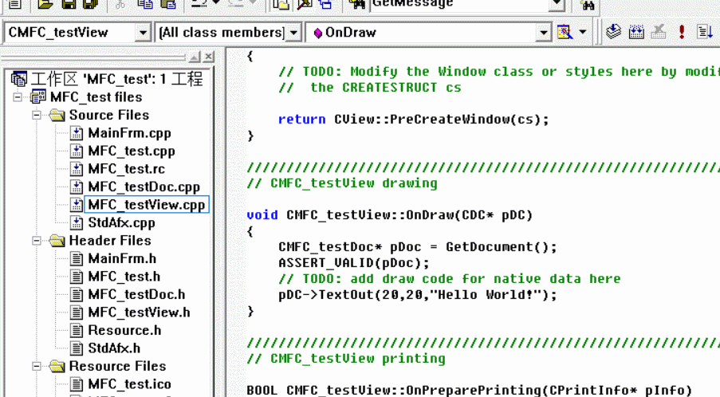
以Afx开头的，如AfxWinMain，都是WinMain下面的全局。
对于MFC框架程序，WinMain不一定是最先执行的。全局对象的构造最先执行。
MFC里面调用底层API，前面要加上作用域::,比如::RegisterClass(lpWndClass)
==(以上第八课内容)==
2.MFC框架程序剖析
窗口类
class CWnd
{
public:
BOOL CreateEx(DWORD dwExStyle, // extended window style
LPCTSTR lpClassName, // registered class name
LPCTSTR lpWindowName, // window name
DWORD dwStyle, // window style
int x, // horizontal position of window
int y, // vertical position of window
int nWidth, // window width
int nHeight, // window height
HWND hWndParent, // handle to parent or owner window
HMENU hMenu, // menu handle or child identifier
HINSTANCE hInstance, // handle to application instance
LPVOID lpParam); // window-creation data
BOOL ShowWindow(int nCmdShow);
BOOL UpdateWindow();
public:
HWND m_hWnd;
};MFC中窗口类对象(CWnd)和窗口并不是一回事,窗口是资源。窗口销毁时，与之对应的C++窗口类对象不一定销毁(具体要看其生命周期是否结束);C++窗口类对象销毁时,与之相关的窗口也将销毁。
第四讲 绘图与文本
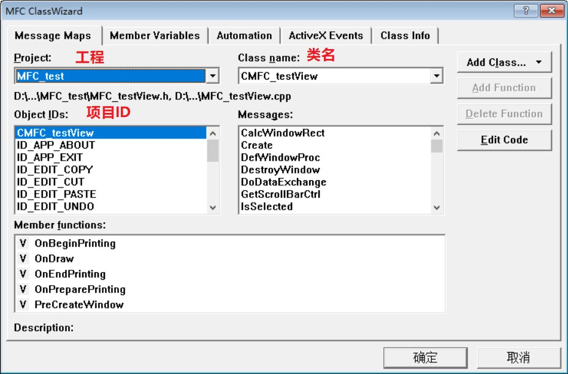
#ifndef afx_msg
#define afx_msg // intentional placeholder
#endifafx_msg这个宏定义为空，相当于注释。
消息映射宏
BEGIN_MESSAGE_MAP(CMFC_testView, CView)
//{{AFX_MSG_MAP(CMFC_testView)
ON_WM_LBUTTONDOWN()
//}}AFX_MSG_MAP
// Standard printing commands
ON_COMMAND(ID_FILE_PRINT, CView::OnFilePrint)
ON_COMMAND(ID_FILE_PRINT_DIRECT, CView::OnFilePrint)
ON_COMMAND(ID_FILE_PRINT_PREVIEW, CView::OnFilePrintPreview)
END_MESSAGE_MAP()1.画线
在public中添加 m_PrOrigin定义
public: CMFC_testDoc* GetDocument(); CPoint m_ptOrigin;调用设备描述表和底层API
void CMFC_testView::OnLButtonDown(UINT nFlags, CPoint point) { // TODO: Add your message handler code here and/or call default m_ptOrigin = point; CView::OnLButtonDown(nFlags, point); } void CMFC_testView::OnLButtonUp(UINT nFlags, CPoint point) { // TODO: Add your message handler code here and/or call default HDC hdc; //设备描述表 hdc = ::GetDC(m_hWnd); //调用底层API ::MoveToEx(hdc, m_ptOrigin.x, m_ptOrigin.y, NULL); ::LineTo(hdc, point.x, point.y); ::ReleaseDC(m_hWnd, hdc); CView::OnLButtonUp(nFlags, point); }利用CDC类实现画线功能
void CMFC_testView::OnLButtonUp(UINT nFlags, CPoint point) { CDC* pDC = GetDC(); pDC->MoveTo(m_ptOrigin); pDC->LineTo(point); ReleaseDC(pDC); CView::OnLButtonUp(nFlags, point); }利用CClientDC类实现画线功能
void CMFC_testView::OnLButtonUp(UINT nFlags, CPoint point) { CClientDC dc(this); //this指针指向当前的视类 dc.MoveTo(m_ptOrigin); dc.LineTo(point); CView::OnLButtonUp(nFlags, point); }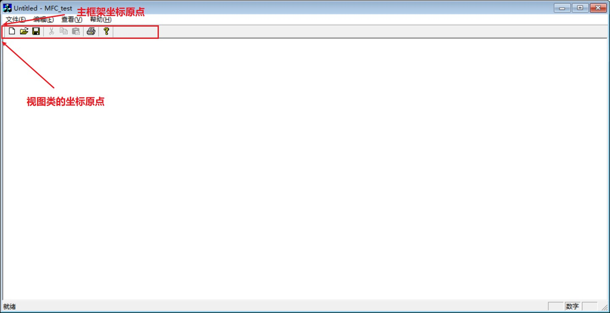
利用CWindowDC类实现画线功能
(可以把线画到菜单上,菜单是主框架的非客户区)
void CMFC_testView::OnLButtonUp(UINT nFlags, CPoint point) { CWindowDC dc(GetParent()); //GetParent指针指向当前窗口的父类 dc.MoveTo(m_ptOrigin); dc.LineTo(point); CView::OnLButtonUp(nFlags, point); }绘制彩色线条——使用CPen类
void CMFC_testView::OnLButtonUp(UINT nFlags, CPoint point) { CPen pen(PS_SOLID,5,RGB(255,0,0));//设置画笔,RGB来确定色彩 CClientDC dc(this); CPen* pOldPen = dc.SelectObject(&pen);//返回值是旧的笔,先保存起来 dc.MoveTo(m_ptOrigin); dc.LineTo(point); dc.SelectObject(pOldPen);//旧笔再放回去
CView::OnLButtonUp(nFlags, point);}
7. 用画刷CBrush类绘图
```C++
void CMFC_testView::OnLButtonUp(UINT nFlags, CPoint point)
{
CBrush brush(RGB(255,0,0));
CClientDC dc(this);
dc.FillRect(CRect(m_ptOrigin,point), &brush);
//绘制矩形
CView::OnLButtonUp(nFlags, point);
}添加位图资源
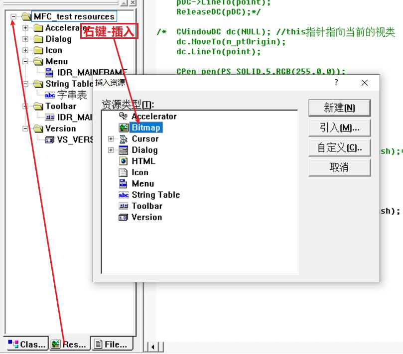
void CMFC_testView::OnLButtonUp(UINT nFlags, CPoint point)
{
CBitmap bmp;
bmp.LoadBitmap(IDB_BITMAP1);
CBrush brush(&bmp);
CClientDC dc(this);
dc.FillRect(CRect(m_ptOrigin,point), &brush);
//添加位图资源
CView::OnLButtonUp(nFlags, point);
}灵魂画手上线!!!
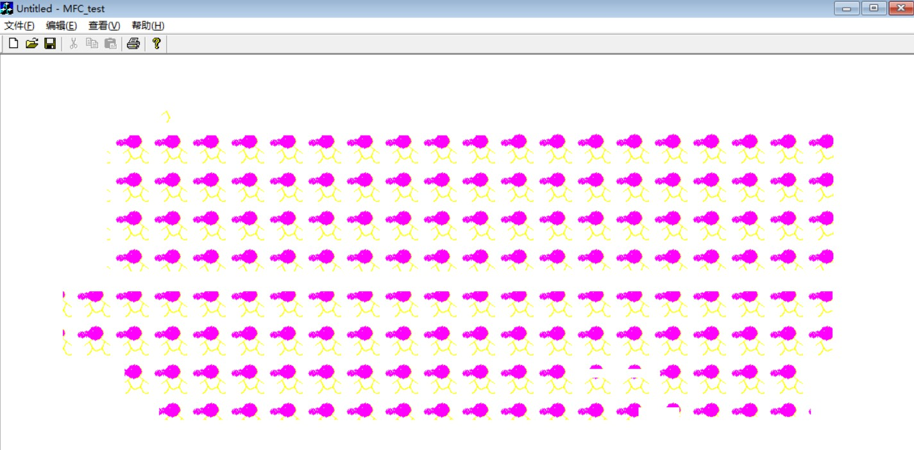
==(以上第九课内容)==
绘制连续线条
(捕获鼠标move消息,画若干个首尾连续的短直线)
void CMFC_testView::OnMouseMove(UINT nFlags, CPoint point) { // TODO: Add your message handler code here and/or call default CPen pen(PS_SOLID,5,RGB(255,0,0));//设置画笔 CClientDC dc(this); CPen* pOldPen = dc.SelectObject(&pen); //OnMouseMove if (nFlags == MK_LBUTTON )//表示鼠标左键一直没有松开 { dc.MoveTo(m_ptOrigin); dc.LineTo(point); //记录move m_ptOrigin = point; //更改下一次的画线坐标起点为本次画线的终点 } dc.SelectObject(pOldPen); CView::OnMouseMove(nFlags, point); }橡皮筋技术
(通过背景取反擦除上一次的线条)
BOOL CMFC_testView::OnEraseBkgnd(CDC* pDC) { // TODO: Add your message handler code here and/or call default CRect rect; GetClientRect(&rect);//获得当前窗口的参数 CBitmap bmp; bmp.LoadBitmap(IDB_BITMAP1); CBrush brush(&bmp); CClientDC dc(this); dc.FillRect(rect, &brush); //return CView::OnEraseBkgnd(pDC); return TRUE; }
2.文本编程
void CTEXTView::OnDraw(CDC* pDC)
{
CTEXTDoc* pDoc = GetDocument();
ASSERT_VALID(pDoc);
// TODO: add draw code for native data here
pDC->TextOut(100,100,"Hello World!");
}void CTEXTView::OnDraw(CDC* pDC)
{
CTEXTDoc* pDoc = GetDocument();
ASSERT_VALID(pDoc);
// TODO: add draw code for native data here
CString str("Hello world!");
pDC->TextOut(100,100,str);
}添加字符串资源
void CTEXTView::OnDraw(CDC* pDC)
{
CTEXTDoc* pDoc = GetDocument();
ASSERT_VALID(pDoc);
// TODO: add draw code for native data here
CString str;
str.LoadString(IDS_MYSTRING);
pDC->TextOut(100,100,str);
}创建记事本
创建插入符
int CTEXTView::OnCreate(LPCREATESTRUCT lpCreateStruct) { if (CView::OnCreate(lpCreateStruct) == -1) return -1; // TODO: Add your specialized creation code here /* CreateSolidCaret(20,200);//插入符大小 ShowCaret(); */ CClientDC dc(this); TEXTMETRIC tm; dc.GetTextMetrics(&tm); CreateSolidCaret(tm.tmAveCharWidth/8, tm.tmHeight);//根据字符大小设置插入符大小 ShowCaret();
return 0;}
2. 创建位图插入符
```C++
int CTEXTView::OnCreate(LPCREATESTRUCT lpCreateStruct)
{
if (CView::OnCreate(lpCreateStruct) == -1)
return -1;
CClientDC dc(this);
TEXTMETRIC tm;
dc.GetTextMetrics(&tm);
CBitmap bmp; //局部变量
bmp.LoadBitmap(IDB_BITMAP1);//对象和资源绑定在一起,对象释放掉之后资源也释放掉了
CBrush brush(&bmp);
CreateCaret(&bmp);
ShowCaret();
bmp.Detach();//解除C++对象和资源的绑定关系,C++对象释放,资源还在。
return 0;
}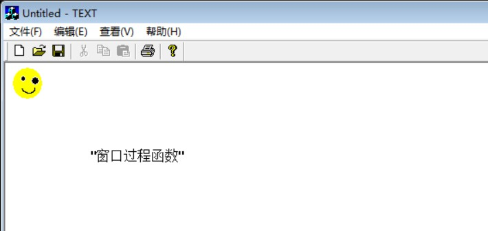
==(以上第十课内容)==
插入符位置随鼠标单击移动
//先在头文件里面定义全局变量 /* public: CString m_strLine; CPoint m_ptOrigin; */ void CTEXTView::OnLButtonDown(UINT nFlags, CPoint point) { // TODO: Add your message handler code here and/or call default SetCaretPos(point);//光标随鼠标单击移动 m_strLine.Empty();//之前存储的字符清空,不重复输出 m_ptOrigin =point;//保存鼠标点击的位置 CView::OnLButtonDown(nFlags, point); } void CTEXTView::OnChar(UINT nChar, UINT nRepCnt, UINT nFlags) { // TODO: Add your message handler code here and/or call default CClientDC dc(this);//设备描述表,以下用于输出 m_strLine += nChar; dc.TextOut(m_ptOrigin.x, m_ptOrigin.y, m_strLine);
CView::OnChar(nChar, nRepCnt, nFlags);}
4. 回车键和退格键
```C++
void CTEXTView::OnChar(UINT nChar, UINT nRepCnt, UINT nFlags)
{
// TODO: Add your message handler code here and/or call default
CClientDC dc(this);//设备描述表,以下用于输出
if (13 == nChar) //回车键的ASCII码为13
{
TEXTMETRIC tm;
dc.GetTextMetrics(&tm);//取得字体的高度
m_strLine.Empty();
m_ptOrigin.y += tm.tmHeight;
}
else if (8 == nChar) //退格键的ASCII码为8
{
COLORREF clr = dc.SetTextColor(dc.GetBkColor());//文本设置成背景色
dc.TextOut(m_ptOrigin.x, m_ptOrigin.y, m_strLine);//再输出一次
m_strLine = m_strLine.Left(m_strLine.GetLength() - 1) ;//最右边删掉一个字符
dc.SetTextColor(clr);//还原颜色
}
else
m_strLine += nChar;
dc.TextOut(m_ptOrigin.x, m_ptOrigin.y, m_strLine);
CView::OnChar(nChar, nRepCnt, nFlags);
}插入符随之字符输入后移
CSize sz = dc.GetTextExtent(m_strLine);//得到x,y参数 CPoint pt; pt.x = m_ptOrigin.x + sz.cx;//插入符宽度后移 pt.y = m_ptOrigin.y; SetCaretPos(pt);设置字体
CClientDC dc(this);//设备描述表,以下用于输出 CFont font; font.CreatePointFont(200, "华文琥珀"); //设置字体 CFont* pOldFont = dc.SelectObject(&font); dc.SetTextColor(RGB(255,0,0));//设置颜色 ······ dc.SelectObject(pOldFont);//把字体换回来模拟卡拉OK的字幕变色功能
void CTEXTView::OnChar(UINT nChar, UINT nRepCnt, UINT nFlags) { // TODO: Add your message handler code here and/or call default CClientDC dc(this);//设备描述表,以下用于输出 CFont font; font.CreatePointFont(400,"华文行楷",NULL); //设置字体 CFont* pOldFont = dc.SelectObject(&font); dc.SetTextColor(RGB(255,0,0)); if (13 == nChar) //回车键的ASCII码为13 { TEXTMETRIC tm; dc.GetTextMetrics(&tm);//取得字体的高度 m_strLine.Empty(); m_ptOrigin.y += tm.tmHeight; } else if (8 == nChar) //退格键的ASCII码为8 { COLORREF clr = dc.SetTextColor(dc.GetBkColor());//文本设置成背景色 dc.TextOut(m_ptOrigin.x, m_ptOrigin.y, m_strLine);//再输出一次 m_strLine = m_strLine.Left(m_strLine.GetLength() - 1) ;//最右边删掉一个字符 dc.SetTextColor(clr);//还原颜色 } else m_strLine += nChar;
CSize sz = dc.GetTextExtent(m_strLine);//得到x,y参数
CPoint pt;
pt.x = m_ptOrigin.x + sz.cx;//插入符宽度后移
pt.y = m_ptOrigin.y;
SetCaretPos(pt);
dc.TextOut(m_ptOrigin.x, m_ptOrigin.y, m_strLine);
dc.SelectObject(pOldFont);//把字体换回来
CView::OnChar(nChar, nRepCnt, nFlags); }
int nWidth = 0;
void CTEXTView::OnTimer(UINT nIDEvent)
{
// TODO: Add your message handler code here and/or call default
nWidth += 3;//宽度每秒加3
CClientDC dc(this);
TEXTMETRIC tm;
dc.GetTextMetrics(&tm);
CRect rect;
rect.left = 0;
rect.top = 200;
rect.right = rect.left + nWidth;//往右增长
rect.bottom = rect.top + tm.tmHeight;
dc.SetTextColor(RGB(255,0,0));
CString str;
str.LoadString(IDS_MYSTRING);
dc.DrawText(str,rect,DT_LEFT);//字符串,矩形框,从左往右
CSize sz = dc.GetTextExtent(str);
if (nWidth > sz.cx) //超出矩形框范围就变色
{
nWidth = 0;
dc.SetTextColor(RGB(0,0,255));
dc.TextOut(rect.left,rect.top,str);
}
CView::OnTimer(nIDEvent);}
**新建MFC工程(CRichEditView基类有现成的记事本)**

***
## 第五讲 菜单编程
### 1.菜单响应

当然，也可以自定义顶级菜单设置响应。

定义菜单并设置ID号后,在四个类里面都可以设置ID_TEST。
但是点击test，只会响应视类的定义，其它三个类的定义都不响应。
(==以上第十一课内容==)
弹出式菜单没有ID号,只有菜单项才有ID号
**Windows消息分类**
- 标准消息
除`WM_COMMAND`之外，所有以`WM_`开头的消息。从`CWnd`派生的类，都可以接收到这类消息。
- 命令消息
**来自菜单、快捷键或工具栏按钮的消息。**这类消息都以`WM_COMMAND`呈现。在MFC中,通过菜单项的标识(ID)来区分不同的命令消息;在从`CCmdTarget`派生的类,都可以接收到这类消息。
- 通告消息
由控件产生的消息,例如，按钮的单击，列表框的选择等均产生此类消息,为的是向其父窗口(通常是对话框)通知时间的发生。这类消息也是以`WM_COMMAND`形式呈现。
从`CCmdTarget`派生的类,都可以接收到这类消息。
**菜单响应命令与响应顺序**
在视图、文档、主框架、应用程序类中都添加菜单响应命令ON_TEST，最后只有View类响应。

**把视类菜单响应删除,轮到文档类响应。**
**响应顺序：**
> CMenuView-->CMenuDoc-->CMainFrame-->CMenuApp
- 当点击某菜单项时，最先接收到这个菜单命令消息的是框架类。
- 框架类把接收到的这个消息传给它的子窗口，即视类。视类根据命令消息映射机制查找自身是否对这个消息进行了响应，如果响应了，则调用自身相应响应。
- 如果视类没有对此命令消息作出响应，就交由文档类，文档类同样查找自身是否这个消息进行了响应，如果响应了，则调用自身相应响应。
- 如果文档类也未做出响应，就把这个命令消息交还给视类，后者再交还给框架类。
- 框架类查看自己是否对这个命令消息进行了响应，如果它也没有相应，就把这个菜单命令消息交给应用程序类，由后者来处理。
### 2.基本菜单操作
**菜单的结构**

**标记菜单**
> Source Files-->MainFrm.cpp中
```C++
GetMenu()->GetSubMenu(0)->CheckMenuItem(0, MF_BYPOSITION | MF_CHECKED);
//通过楼层号来访问
//获得顶级菜单-->子菜单(0)-->0号菜单项前面打勾GetMenu()->GetSubMenu(0)-> CheckMenuItem(ID_FILE_NEW, MF_CHECKED);
//用ID号访问使用图形标记菜单
GetMenu()->GetSubMenu(0)->CheckMenuItem(0, MF_BYPOSITION | MF_CHECKED);
//获得顶级菜单-->子菜单(0)-->0号菜单项前面打勾
GetMenu()->GetSubMenu(0)-> CheckMenuItem(ID_FILE_NEW, MF_CHECKED);
//用ID号访问
CBitmap bmp1,bmp2;
bmp1.LoadBitmap(IDB_BITMAP2);//对应checked
bmp2.LoadBitmap(IDB_BITMAP3);//对应unchecked
GetMenu()->GetSubMenu(0)->SetMenuItemBitmaps(0, MF_BYPOSITION, &bmp1, &bmp2);
bmp1.Detach();//解除绑定
bmp2.Detach();禁用菜单项
CMainFrame::CMainFrame()
{
// TODO: add member initialization code here
m_bAutoMenuEnable = FALSE;
}该要生效，必须在CMainFrame类的构造中把成员变量m_bAutoMenuEnable设置为FALSE。要使用菜单命令更新机制（后面有讲），则该变量应设置为TRUE（缺省值）
GetMenu()->GetSubMenu(0)->EnableMenuItem(0, MF_BYPOSITION | MF_GRAYED | MF_DISABLED);//变灰和失效通常一起使用。移除和加载菜单
SetMenu(NULL);//移除菜单
CMenu menu;//加载菜单
menu.LoadMenu(IDR_MAINFRAME);
SetMenu(&menu);
menu.Detach();//解除menu资源和对象的关系,否则return 0后资源会被释放;3.MFC菜单命令更新机制
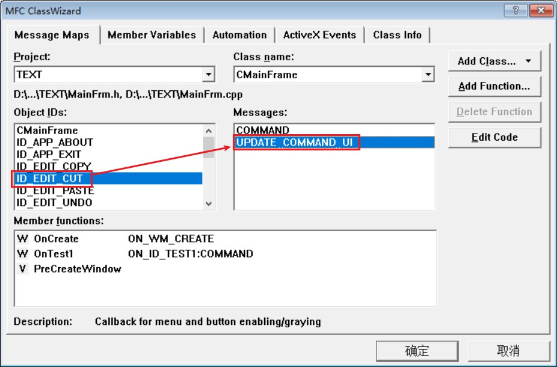
ID_EDIT_CUT是剪切的ID号
void CMainFrame::OnUpdateEditCut(CCmdUI* pCmdUI)
{
// TODO: Add your command update UI handler code here
pCmdUI->Enable(TRUE);
pCmdUI->SetCheck();
pCmdUI->SetText("123");
}//MFC菜单命令更新机制4.制作一个快捷菜单
再次强调菜单并不是窗口,菜单从CObject派生而来,属于资源。
添加新的菜单资源
resource界面在Menu上右键插入Menu命令,为这个菜单资源添加菜单项。
给视类添加WM_RBUTTONDOWN消息响应
Ctrl+w快捷键的方式去添加一个响应WM_RBUTTONDOWN,注意一定是在视类里面添加。调用
TrackPopupMenu先给这两个快捷菜单项设置一下ID号,ID_FTEST1和ID_FTEST2。
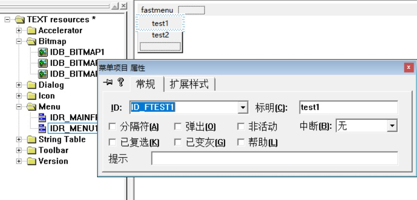
添加响应
void CTEXTView::OnFtest1() { // TODO: Add your command handler code here MessageBox("test1"); }注意一定要添加到视类。(添加到Frame类里面,视类也能用。但是View类,Frame类里面就不能响应了)
==(以上第十二课内容)==
5.动态菜单操作
添加菜单项目
放在Frame::OnCreate里面
CMenu my_menu;//添加顶层菜单
my_menu.CreateMenu();
GetMenu()->AppendMenu( MF_POPUP, (UINT) my_menu.m_hMenu, "my_menu");
GetMenu()->GetSubMenu(0)->AppendMenu(MF_STRING, 777, "Hello");//添加顶层菜单下的菜单项,在(0)号菜单下添加
//AppendMenu()的第一个参数决定了菜单的类型
my_menu.Detach();插入菜单项目
CMenu my_menu;
my_menu.CreateMenu();
GetMenu()->InsertMenu(2, MF_BYPOSITION | MF_POPUP, (UINT)my_menu.m_hMenu,"my_menu");//在2号位置插入顶级菜单
GetMenu()->GetSubMenu(0)->InsertMenu (0, MF_STRING | MF_BYPOSITION, 777, "Hello");//插入顶层菜单项
my_menu.Detach();删除菜单项目
GetMenu()->DeleteMenu(1, MF_BYPOSITION );//删除顶级菜单
GetMenu()->GetSubMenu(0)->DeleteMenu (0, MF_BYPOSITION);//删除顶级菜单的菜单项动态添加的菜单命令响应
动态菜单不能用Ctrl+w快捷键来响应,因为VC找不到动态,选择手动在以下三处添加响应代码。
MainFrm.h
protected: //{{AFX_MSG(CMainFrame) afx_msg int OnCreate(LPCREATESTRUCT lpCreateStruct); afx_msg void OnTest(); afx_msg void OnTest1(); afx_msg void OnUpdateEditCut(CCmdUI* pCmdUI); //}}AFX_MSG void OnHello();//定义响应OnHello(),放在Afx外面MainFrm.cpp
//在消息宏映射里面增加消息映射宏 BEGIN_MESSAGE_MAP(CMainFrame, CFrameWnd) //{{AFX_MSG_MAP(CMainFrame) ON_WM_CREATE() ON_COMMAND(ID_TEST1, OnTest1) ON_UPDATE_COMMAND_UI(ID_EDIT_CUT, OnUpdateEditCut) //}}AFX_MSG_MAP ON_COMMAND(777, OnHello)//放在BEGIN和END中间,ID号为777 END_MESSAGE_MAP()void CMainFrame::OnHello() { // TODO: Add your command handler code here MessageBox("Hello"); }//添加定义
第六讲 对话框编程
1.对话框的基本知识
对话框是一个窗口,与对话框资源相关的类为CDialog,由CWnd类派生而来。可以将对话框看成是一个大容器,在它上面能够放置各种标准的扩展控件，是用户与程序进行交互的重要手段。在MFC中,所有的控件都是由CWnd派生而来,因此,控件实际上也是窗口。
对话框种类
模式对话框
当期显示的时候,程序会暂停执行,直到关闭这个对话框后,才能继续执行程序中其他任务,如”文件/打开”对话框。
无模式对话框
当其显示时,允许转而执行程序中其它任务,而不用关闭这个对话框。该类型对话框不会垄断用户的操作,用户仍可以与其他界面对象进行交互。例如,”查找”对话框。
2.创建模式对话框
- 在Menu里面添加一个对话框
- 在Frame里面为其添加响应
- 在位图资源里面新建一个CMyDlg
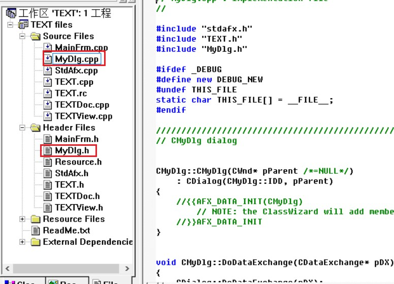
添加位图之后再File里面会自动添加MyDlg.cpp和MyDlg.h
在主框架内添加头文件#include “MyDlg.h”
void CMainFrame::OnMydlg()
{
// TODO: Add your command handler code here
CMyDlg Dlg;
Dlg.DoModal();
}
/*
DoModal功能:
1.创建对话框
2.显示对话框
3.暂停运行
DoModal何时返回?
点击 "确定" --> IDOK
"取消"-->IDCANCEL
"关闭"-->IDCANCEL
调用EndDialog()的时候,DoModal返回。
*/EndDialog()功能
- 通知DoModal结束暂停,可以返回
- 隐藏对话框(并没有kill)
3.创建无模式对话框
void CMainFrame::OnMydlg()
{
// TODO: Add your command handler code here
// CMyDlg Dlg; //模式对话框
// Dlg.DoModal();
CMyDlg Dlg; //无模式对话框
Dlg.Create(IDD_DIALOG1, this);
Dlg.ShowWindow(SW_SHOW);//将无模式对话框显示出来
/*以上代码会导致对话框闪退,加上Detach()解除局部对象绑定*/
Dlg.Detach();
}在这里加上Detach()之后会导致程序异常退出。
Detach()曾用于CBitmap、CMenu
==(以上第十三课内容)==
Detach()失效原因
窗口这个资源和普通资源不一样,解除了C++对象和窗口的绑定关系,窗口的所有特征都会失效,则会导致程序崩溃。
解决方法
把
CMyDlg Dlg;放到主框架的头文件中,定义为全局变量。但是用这种方法Create只能被执行一次,因为第一次Create之后还没有被销毁，第二次再执行就会报错。void CMainFrame::OnMydlg() { static BOOL bFlag = FALSE; if (FALSE == bFlag) { Dlg.Create(IDD_DIALOG1, this); bFlag = TRUE; } Dlg.ShowWindow(SW_SHOW);//将无模式对话框显示出来 }
为什么模式对话框可以用局部变量,而无模式对话框不能？
原因在于DoModal()有暂停功能,调用DoModal时线程都被暂停,并没有返回,之后被释放掉也不会受到影响。
把对话框对象定义为指针，在堆上分配内存。
void CMainFrame::OnMydlg() { CMyDlg* pDlg = new CMyDlg; pDlg->Create(IDD_DIALOG1, this); pDlg->ShowWindow(SW_SHOW); }//在堆上new一个指针,但是这种方法会导致内存泄露
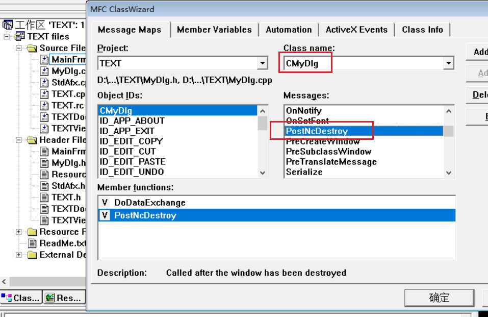
在MyDlg.cpp中添加如下代码:
void CMyDlg::PostNcDestroy()
{
// TODO: Add your specialized code here and/or call the base class
//非客户区被销毁的时候
delete this;//防止内存泄露
CDialog::PostNcDestroy();
}销毁无模式对话框
static BOOL bFlag = FALSE;
if (FALSE == bFlag)
{
Dlg.Create(IDD_DIALOG1, this);
Dlg.ShowWindow(SW_SHOW);
bFlag = TRUE;
}
else
{
Dlg.DestroyWindow();
bFlag = FALSE;
}4.控件访问的七种方法
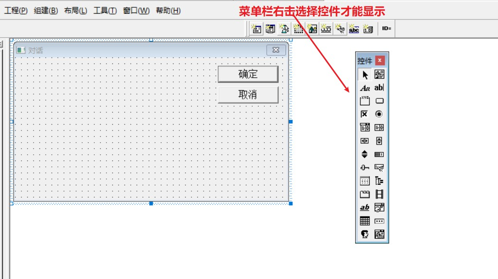
- MFC的DDX数据交换——控件和整型变量关联
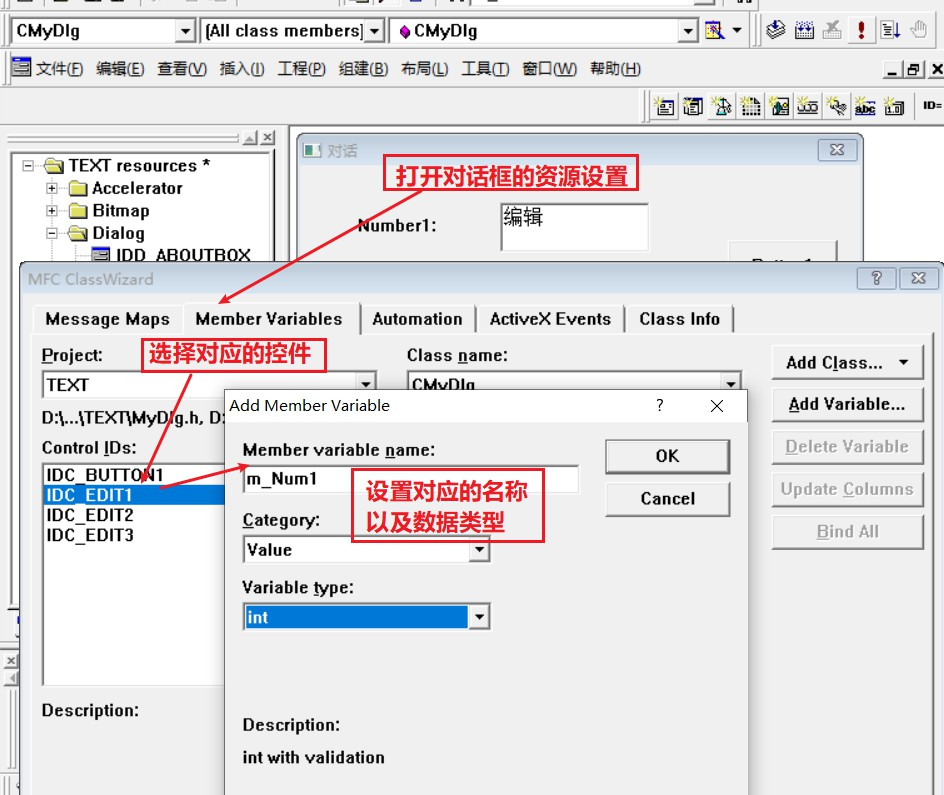
此时MyDlg.cpp中DDX部分代码如下:
void CMyDlg::DoDataExchange(CDataExchange* pDX)
{
CDialog::DoDataExchange(pDX);
//{{AFX_DATA_MAP(CMyDlg)
DDX_Text(pDX, IDC_EDIT1, m_Num1);
DDX_Text(pDX, IDC_EDIT2, m_Num2);
DDX_Text(pDX, IDC_EDIT3, m_Num3);
//}}AFX_DATA_MAP
}接着设置Button1，
void CMyDlg::OnButton1()
{
// TODO: Add your control notification handler code here
m_Num3 = m_Num1 + m_Num2;
}但是这样结果并不能如我们期望中正常显示，原因在于成员变量和对话框控件中的数据并不能够双向流通。
void CMyDlg::OnButton1()
{
// TODO: Add your control notification handler code here
UpdateData(); //成员变量从对话框控件中获取数据
m_Num3 = m_Num1 + m_Num2;
UpdateData(FALSE); //以成员变量的值初始化对话框控件
}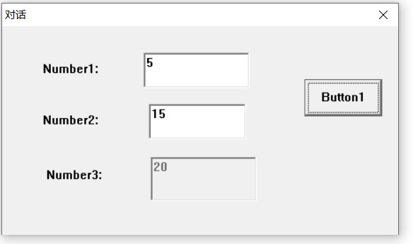
MFC的DDX数据交换——控件和控件变量关联
和1中类似,改变控件的类型为
Control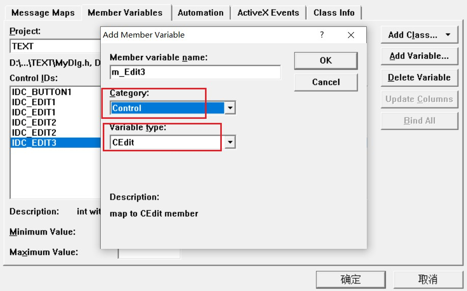
void CMyDlg::OnButton1()
{
int num1, num2, num3;
char c1[10], c2[10], c3[10];
m_Edit1.GetWindowText(c1, 10);//获得对应的字符串
m_Edit2.GetWindowText(c2, 10);
num1 = atoi(c1);//字符串转为整型
num2 = atoi(c2);
num3 = num1 + num2;
itoa(num3,c3,10);
m_Edit3.SetWindowText(c3);
}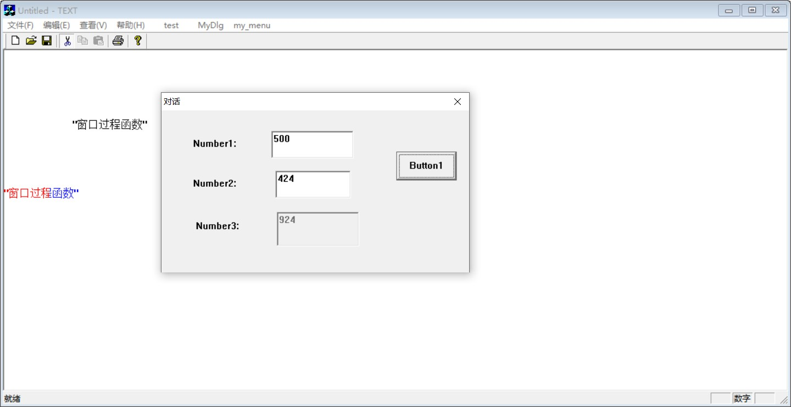
3-1. GetDlgItem + Get/SetWindowText【使用频率较高】
重要：CWnd* GetDlgItem(int nID) const; 该返回一个指向由参数nID指定的控件对象的指针。
void CMyDlg::OnButton1()
{
//使用GetDlgItem
int num1, num2, num3;
char c1[10], c2[10], c3[10];
GetDlgItem(IDC_EDIT1)->GetWindowText(c1, 10);
GetDlgItem(IDC_EDIT2)->GetWindowText(c2, 10);
num1 = atoi(c1);
num2 = atoi(c2);
num3 = num1 + num2;
itoa(num3,c3,10);
GetDlgItem(IDC_EDIT3)->SetWindowText(c3);
}3-2. 利用GetDlgItem改变控件文本内容
void CMyDlg::OnNumber1()
{
// TODO: Add your control notification handler code here
CString str;
GetDlgItem(IDC_Number1)->GetWindowText(str);//在中英文之间转变
if (str == "Number1:")
GetDlgItem(IDC_Number1)->SetWindowText("数值1：");
else
GetDlgItem(IDC_Number1)->SetWindowText("Number1:");
}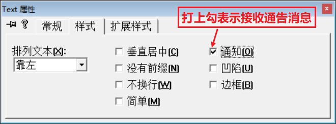
注意,要在控件属性中勾选通知表示接收通告消息
3-3. 利用GetDlgItem在控件中绘图
void CMyDlg::OnNumber2()
{
// TODO: Add your control notification handler code here
CWnd* pWnd = GetDlgItem(IDC_Number2);
CRect rc;
pWnd->GetClientRect(&rc);
CBrush brush(RGB(255,0,0));
CDC* pDC = pWnd->GetDC();
pDC->FillRect(&rc,&brush);
pDC->SetBkMode(TRANSPARENT);
pDC->TextOut(10,1,"啦啦啦");
ReleaseDC(pDC);
}我做到这一步的时候突然发现,我一旦使用MyDlg菜单,位图插入符就会消失…但是调用其他菜单就不会。
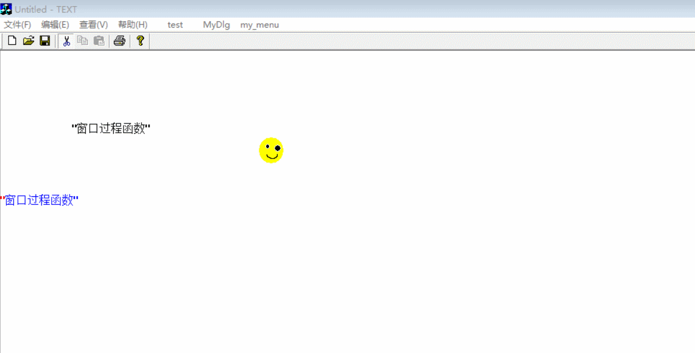
5.改变对话框/窗口外观
设置窗口的位置与大小
BOOL CMyDlg::OnInitDialog() { CDialog::OnInitDialog(); // TODO: Add extra initialization here SetWindowPos(&wndTopMost,0,0,0,0,SWP_NOMOVE | SWP_NOSIZE); return TRUE; // return TRUE unless you set the focus to a control // EXCEPTION: OCX Property Pages should return FALSE }设置窗口的形状
BOOL CMyDlg::OnInitDialog() { CDialog::OnInitDialog(); CRect rc; GetClientRect(rc); CRgn rgn; rgn.CreateEllipticRgn(0, 0, rc.Width(), rc.Height());//设置椭圆矩形框 SetWindowRgn((HRGN) rgn.m_hObject, TRUE); return TRUE; // return TRUE unless you set the focus to a control // EXCEPTION: OCX Property Pages should return FALSE }
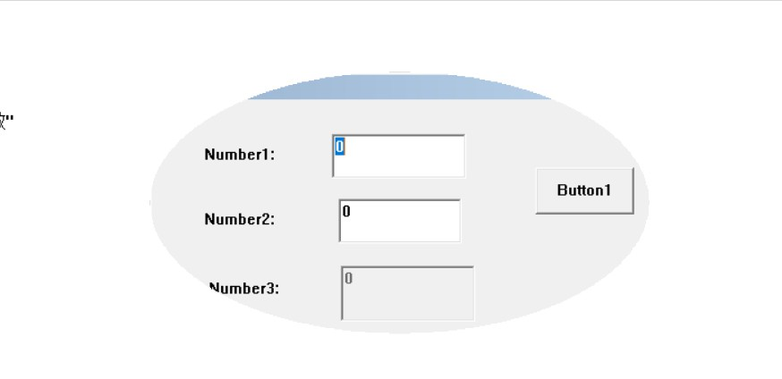
==(以上第十四课内容)==
第七讲 界面编程
1.更改窗口大小、标题、风格
如果希望在应用程序窗口创建之前修改它的大小、标题和风格，应该在CMainFrame类的PreCreateWindow成员进行。
该有个类型是CREATESTRUCT结构的参数，如果在修改了这个参数中的成员变量的值，那么这种改变会反映到MFC底层代码中，当MFC底层代码调用CreateWindowEx去创建窗口时，它就会使用改变后的参数值去创建这个窗口。
//在窗口创建之前进行修改
BOOL CMainFrame::PreCreateWindow(CREATESTRUCT& cs)
{
if( !CFrameWnd::PreCreateWindow(cs) )
return FALSE;
// TODO: Modify the Window class or styles here by modifying
// the CREATESTRUCT cs
cs.cx = 300;//更改窗口长和宽
cs.cy = 200;
cs.lpszName = "SA作品";//更改标题栏名字
cs.style = cs.style & ~FWS_ADDTOTITLE; //让窗口显示出自己设置的标题
return TRUE;
}在窗口创建之后更改其风格
SetWindowLong(m_hWnd, GWL_STYLE, GetWindowLong(m_hWnd,GWL_STYLE) & ~WS_MAXIMIZEBOX);//窗口创建之后去掉最大化选项,在OnCreate里面添加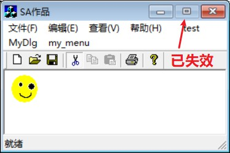
2.更改光标、标题图标、窗口背景
BOOL CTEXTView::PreCreateWindow(CREATESTRUCT& cs)
{
// TODO: Modify the Window class or styles here by modifying
// the CREATESTRUCT cs
cs.lpszClass = "hello";//在视类要调用"hello"这个图纸
return CView::PreCreateWindow(cs);
}BOOL CMainFrame::PreCreateWindow(CREATESTRUCT& cs)
{
if( !CFrameWnd::PreCreateWindow(cs) )
return FALSE;
//自己注册窗口类
WNDCLASS MyWnd;
MyWnd.cbClsExtra = NULL; MyWnd.cbWndExtra = NULL;
MyWnd.hbrBackground = (HBRUSH)GetStockObject(BLACK_BRUSH);
MyWnd.hCursor = LoadCursor(NULL, IDC_CROSS);
MyWnd.hIcon = LoadIcon(NULL, IDI_WARNING);
MyWnd.hInstance = AfxGetInstanceHandle();
MyWnd.lpfnWndProc = ::DefWindowProc;
MyWnd.lpszClassName = "Hello";
MyWnd.lpszMenuName = NULL;
MyWnd.style = CS_HREDRAW | CS_VREDRAW;
RegisterClass(&MyWnd); //注册
cs.lpszClass = "hello";
return TRUE;
}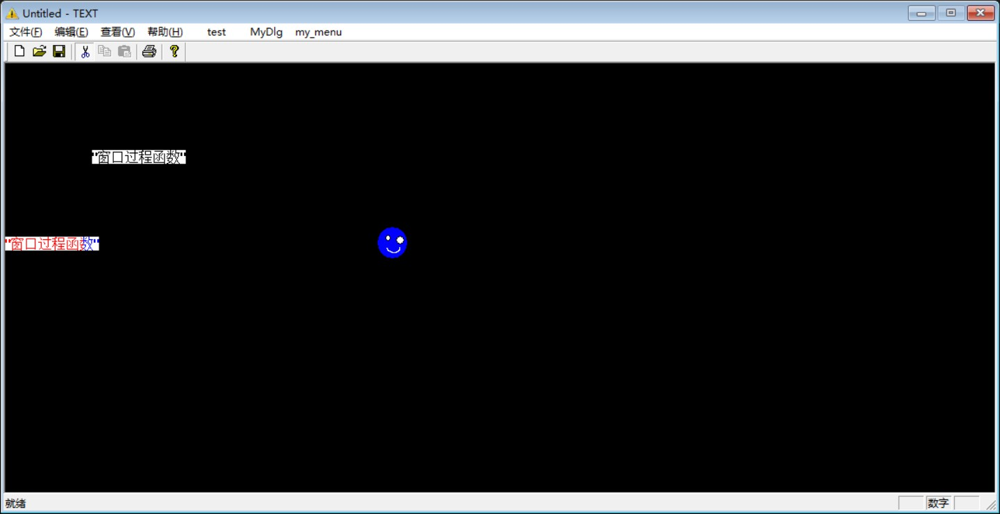
使用一个简单的修改
BOOL CMainFrame::PreCreateWindow(CREATESTRUCT& cs)
{
if( !CFrameWnd::PreCreateWindow(cs) )
return FALSE;
// TODO: Modify the Window class or styles here by modifying
//一个简单的修改
cs.lpszClass = AfxRegisterWndClass(CS_HREDRAW | CS_VREDRAW, 0, 0, LoadIcon(NULL, IDI_WARNING));
return TRUE;
}
BOOL CTEXTView::PreCreateWindow(CREATESTRUCT& cs)
{
// TODO: Modify the Window class or styles here by modifying
// the CREATESTRUCT cs
//cs.lpszClass = "hello";
cs.lpszClass = AfxRegisterWndClass(CS_HREDRAW | CS_VREDRAW, LoadCursor(NULL,IDC_CROSS),(HBRUSH)GetStockObject(BLACK_BRUSH),0);
return CView::PreCreateWindow(cs);
}SetClassLong实例
int CTEXTView::OnCreate(LPCREATESTRUCT lpCreateStruct)
{
if (CView::OnCreate(lpCreateStruct) == -1)
return -1;
SetClassLong(m_hWnd, GCL_HBRBACKGROUND,(LONG)GetStockObject(BLACK_BRUSH));
SetClassLong(m_hWnd, GCL_HCURSOR,(LONG) LoadCursor(NULL,IDC_CROSS));
return 0;
}int CMainFrame::OnCreate(LPCREATESTRUCT lpCreateStruct)
{
if (CFrameWnd::OnCreate(lpCreateStruct) == -1)
return -1;
if (!m_wndToolBar.CreateEx(this, TBSTYLE_FLAT, WS_CHILD | WS_VISIBLE | CBRS_TOP
| CBRS_GRIPPER | CBRS_TOOLTIPS | CBRS_FLYBY | CBRS_SIZE_DYNAMIC) ||
!m_wndToolBar.LoadToolBar(IDR_MAINFRAME))
{
TRACE0("Failed to create toolbar\n");
return -1; // fail to create
}
if (!m_wndStatusBar.Create(this) ||
!m_wndStatusBar.SetIndicators(indicators,
sizeof(indicators)/sizeof(UINT)))
{
TRACE0("Failed to create status bar\n");
return -1; // fail to create
}
// TODO: Delete these three lines if you don't want the toolbar to
// be dockable
m_wndToolBar.EnableDocking(CBRS_ALIGN_ANY);
EnableDocking(CBRS_ALIGN_ANY);
DockControlBar(&m_wndToolBar);
GetMenu()->GetSubMenu(0)->CheckMenuItem(0, MF_BYPOSITION | MF_CHECKED);
//获得顶级菜单-->子菜单(0)-->0号菜单项前面打勾
GetMenu()->GetSubMenu(0)-> CheckMenuItem(ID_FILE_NEW, MF_CHECKED);
//用ID号访问
CBitmap bmp1,bmp2;
bmp1.LoadBitmap(IDB_BITMAP2);//对应checked
bmp2.LoadBitmap(IDB_BITMAP3);//对应unchecked
GetMenu()->GetSubMenu(0)->SetMenuItemBitmaps(0, MF_BYPOSITION, &bmp1, &bmp2);
bmp1.Detach();//解除绑定
bmp2.Detach();
GetMenu()->GetSubMenu(0)->EnableMenuItem(0, MF_BYPOSITION | MF_GRAYED | MF_DISABLED);//变灰和失效通常一起使用。
SetMenu(NULL);//移除菜单
CMenu menu;//加载菜单
menu.LoadMenu(IDR_MAINFRAME);
SetMenu(&menu);
menu.Detach();//解除menu资源和对象的关系,否则return 0后资源会被释放;
CMenu my_menu;//添加顶层菜单
my_menu.CreateMenu();
GetMenu()->AppendMenu( MF_POPUP, (UINT) my_menu.m_hMenu, "my_menu");
GetMenu()->GetSubMenu(0)->AppendMenu(MF_STRING, 777, "Hello");//添加顶层菜单下的菜单项,在(0)号菜单下添加
//AppendMenu()的第一个参数决定了菜单的类型
my_menu.Detach();
SetClassLong(m_hWnd, GCL_HICON,(LONG)LoadIcon(NULL,IDI_WARNING));//设置标题栏图标
return 0;
}动画图标
先在资源面板添加Icon图形(4个)
void CMainFrame::OnTimer(UINT nIDEvent) //添加定时器代码
{
// TODO: Add your message handler code here and/or call default
static int index = 1;
SetClassLong(m_hWnd, GCL_HICON,(LONG)m_hIcon[index]);
index = ++index % 4;
//切换图标
CFrameWnd::OnTimer(nIDEvent);
}//在CMainFrame::OnCreate()类添加代码如下
m_hIcon[0] = ::LoadIcon(AfxGetInstanceHandle(), MAKEINTRESOURCE(IDI_ICON1));
m_hIcon[1] = ::LoadIcon(theApp.m_hInstance, MAKEINTRESOURCE(IDI_ICON2));
m_hIcon[2] = ::LoadIcon(AfxGetApp()->m_hInstance, MAKEINTRESOURCE(IDI_ICON3));
m_hIcon[3] = AfxGetApp()->LoadIcon(IDI_ICON4);
SetClassLong(m_hWnd, GCL_HICON,(LONG)m_hIcon[0]);
SetTimer(1,1000, NULL);//启动定时器(编号,间隔时间,NULL);3.工具栏编程
增加、删除工具栏按钮;响应按钮命令
工具栏是把常用的菜单命令集合起来，以按钮的形式提供给用户使用，目的是方便用户的操作。
工具按钮的添加、删除都在资源编辑器窗口中的工具栏编辑窗口中完成。
添加按钮响应命令的方法与菜单相同。通常工具栏与其对应的菜单项ID相同，这样，在程序运行时。可以通过单击工具栏上的按钮来调用相应菜单项的命令。
创建工具栏
- 创建工具栏资源
TOOLBAR里面画几个工具栏图标
- 构造ToolBar对象
CToolBar m_newToolBar; //主框类头文件
- 调用Create或CreateEx创建Window工具栏（工具栏也是窗口）
if (!m_newToolBar.CreateEx(this, TBSTYLE_FLAT, WS_CHILD | WS_VISIBLE | CBRS_TOP
| CBRS_GRIPPER | CBRS_TOOLTIPS | CBRS_FLYBY | CBRS_SIZE_DYNAMIC) ||
!m_newToolBar.LoadToolBar(IDR_TOOLBAR1))
{
TRACE0("Failed to create toolbar\n");
return -1; // fail to create
}调用LoadToolBar加载工具栏资源
m_newToolBar.EnableDocking(CBRS_ALIGN_ANY); DockControlBar(&m_newToolBar);
显示和隐藏工具栏
void CMainFrame::OnNewtoolbar()
{
// TODO: Add your command handler code here
if (m_newToolBar.IsWindowVisible())
m_newToolBar.ShowWindow(SW_HIDE);
else
m_newToolBar.ShowWindow(SW_SHOW);
RecalcLayout();//重新布局
DockControlBar(&m_newToolBar);//完成停靠操作
}
void CMainFrame::OnUpdateNewtoolbar(CCmdUI* pCmdUI)
{
// TODO: Add your command update UI handler code here
pCmdUI->SetCheck(m_newToolBar.IsWindowVisible());
}简介代码在下面:
void CMainFrame::OnNewtoolbar()
{
ShowControlBar(&m_newToolBar,!m_newToolBar.IsWindowVisible(), FALSE);
}4.状态栏编程
状态栏最多只有一个,也可以没有状态栏。工具栏的个数不做限制
状态栏的提示行与显示器
状态栏分为两部分：提示行与指示器。
左边最长的部分为提示行，通常用于显示菜单项或工具按钮的提示信息。右边由若干窗格组成的部分为状态栏指示器，通常用来显示大小写键、数字锁定键等信息。
框架程序专门提供了一个indicators数组来管理提示行与指示器。如果要修改状态栏的外观，则只需在indicators数组中添加或减少相应的字符串资源ID即可。
在指定的窗格中添加时钟显示
在资源编辑器中新增字符串资源ID:IDS_TIMER
将新的字符串资源ID添加到indicators数组中
static UINT indicators[] = { ID_SEPARATOR, // status line indicator IDS_TIMER,//在状态栏上增加时间信息 ID_INDICATOR_CAPS, ID_INDICATOR_NUM, ID_INDICATOR_SCRL, };获得系统时间并调整窗口大小以及动态改变
CTime t = CTime::GetCurrentTime();//获得系统时间 CString str = t.Format("%H:%M:%:%S"); CClientDC dc(this); CSize sz = dc.GetTextExtent(str); m_wndStatusBar.SetPaneInfo(1, IDS_TIMER,SBPS_NORMAL, sz.cx);//为指定的窗格设置新的ID、样式、宽度 m_wndStatusBar.SetPaneText(1, str);//TIMER在数组中的下标为1void CMainFrame::OnTimer(UINT nIDEvent) { ...... CTime t = CTime::GetCurrentTime();//每过1s重新设置时间,让时间能够动态更新 CString str = t.Format("%H:%M:%:%S"); m_wndStatusBar.SetPaneText(1, str); CFrameWnd::OnTimer(nIDEvent); }==(以上第十五课内容)==
在提示行中添加坐标显示
- 方法一
//在视图类中加上 //#include "MainFrm.h" //#include "MyDlg.h" void CTEXTView::OnMouseMove(UINT nFlags, CPoint point) { // TODO: Add your message handler code here and/or call default CString str; str.Format("x=%d, y=%d", point.x, point.y); ((CMainFrame*)GetParent())->m_wndStatusBar.SetWindowText(str); //主框架是视类的父窗口,通过GetParent()去拿到父窗口的指针 CView::OnMouseMove(nFlags, point); }不过我用这个会有报错提醒
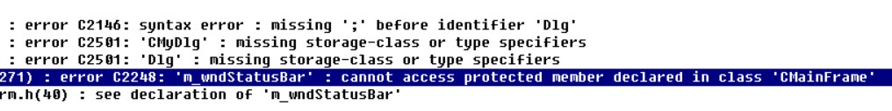
我也不知道这个报错怎么来的…最后一个报错是保护权限报错,把
CStatusBar m_wndStatusBar;从protect放到public下就可以了。找了半个小时发现我一在视图类里面添加
#include "MainFrm.h"就会报错。我觉得应该就是这个问题,C++中的嵌套类定义检查的问题，在 include 之后要声明一下才能使用这个类。
大概又过了二十分钟,我终于搞定了这个问题。
我在
MainFrm.h中加入以下代码#include "MyDlg.h" class CMyDlg;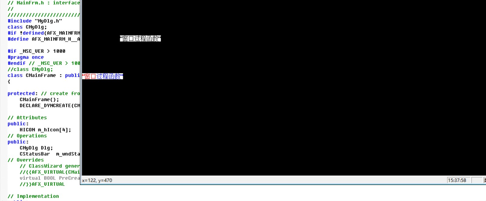
其他方法
void CTEXTView::OnMouseMove(UINT nFlags, CPoint point)
{
// TODO: Add your message handler code here and/or call default
CString str;
str.Format("x=%d, y=%d", point.x, point.y);
// ((CMainFrame*)GetParent())->m_wndStatusBar.SetWindowText(str); //方法一:调用SetWindowText设置状态栏提示行文本
((CMainFrame*)GetParent())->SetMessageText(str);//方法二:利用CFrameWnd类的成员SetMessageText实现，该的作用是在状态栏的提示行中设置文本。
// ((CMainFrame*)GetParent())->GetMessageBar()-> SetWindowText(str);//方法三:利用CFrameWnd类的成员GetMessageBar可以返回状态栏对象的指针，这样也不用再访问CMainFrame类的保护成员变量：m_wndStatusBar。
CView::OnMouseMove(nFlags, point);
}在提示行中显示位图
CBitmapButton m_bmp; //位图对象 MainFrm.h
//建立位图按钮 MainFrm.cpp
CRect rc(100,4,120,20);//定义矩形框
if (!m_bmp.Create("", WS_CHILD|WS_VISIBLE|BS_OWNERDRAW, rc, &m_wndStatusBar, 789))
return FALSE;
if (!m_bmp.LoadBitmaps(IDB_BITMAP2, IDB_BITMAP2, NULL, NULL))//四种情况对应四种位图
return FALSE;可以设置提示行的位图按钮点击产生效果,不过是动态资源,要手动设置三处:MainFrm.h中的声明、MainFrm.cpp中添加位图按钮响应、MainFrm.cpp中加上定义。
- MainFrm.h中的声明
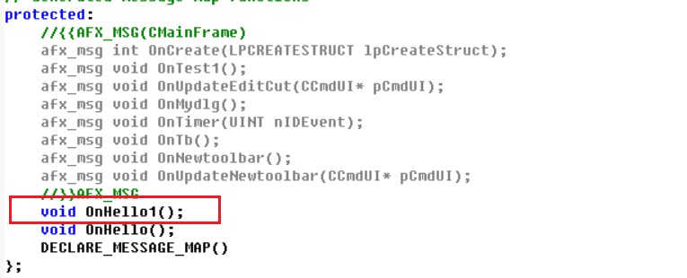
- MainFrm.cpp中添加位图按钮响应
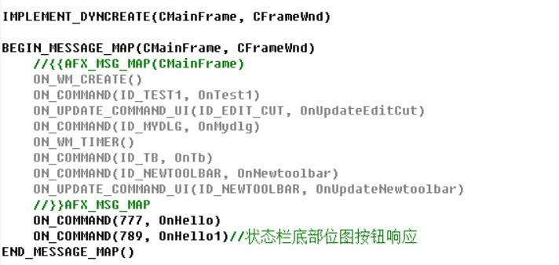
- MainFrm.cpp中加上定义
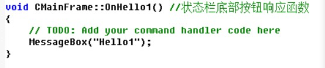
==(以上第十六课内容)==
第八讲 多线程与线程同步
1.进程与线程
程序
计算机指令的集合，它以文件的形式存储在磁盘上。
进程
通常被定义为一个正在运行的程序的实例，是一个程序在其自身的地址空间中的一次执行活动。
进程是活的，是资源申请、调度和独立运行的单位，因此，它使用系统中的运行资源；而程序是死的，它不占用系统的运行资源。
进程由两个部分组成：
1、操作系统用来管理进程的内核对象。内核对象也是系统用来存放关于进程的统计信息的地方。（注意：内核对象不是进程本身）
2、地址空间。它包含所有可执行模块或DLL模块的代码和数据。它还包含动态内存分配的空间。如线程堆栈和堆分配空间。
线程
线程由两个部分组成：
1、线程的内核对象，操作系统用它来对线程实施管理。内核对象也是系统用来存放线程统计信息的地方。
2、线程堆栈，它用于维护线程在执行代码时需要的所有参数和局部变量。
当创建线程时，系统创建一个线程内核对象。该线程内核对象不是线程本身，而是操作系统用来管理线程的较小的数据结构。可以将线程内核对象视为由关于线程的统计信息组成的一个小型数据结构。
线程–>相互之间通信容易、所需要的内存开销少
2.简单多线程示例
#include
#include
DWORD WINAPI ThreadProc( LPVOID lpParameter);
void main()
{
HANDLE hThread;
hThread = CreateThread(NULL,0,ThreadProc,NULL,0,NULL);
CloseHandle(hThread);
cout << "main thread is running" << endl;
}
DWORD WINAPI ThreadProc( LPVOID lpParameter)
{
cout << "thread1 is running" << endl;
return 0;
}
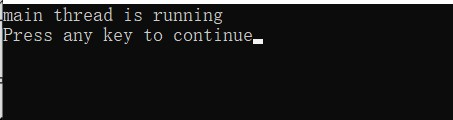
注意1:
Main函数中调用 CloseHandle 语句没有终止新创建的线程，只是表示在主线程中对新创建的线程的引用不感兴趣，因此将其句柄关闭。
另一方面，当关闭该句柄时，系统会递减该线程内核对象的使用计数。当使用计数为0时，系统就会释放该线程内核对象。如果没有关闭线程句柄，系统就会一直保持着对线程内核对象的引用，这样，即使该线程执行完毕，它的引用计数仍不会为0。这样该线程内核对象也就不会被释放，只有等到进程终止时，系统才会清理这些残留的对象。
因此，在程序中，当不再需要线程句柄时，应将其关闭，让这个线程内核对象的引用计数减1。
问题:为什么上述程序线程1没有运行？
在主线程运行时,主线程已经执行完毕了,但是分配给主线程的时间片还没有执行完,这时候主线程返回,程序结束了,Thread1自然就不会执行。
解决办法:
- 增加主线程的耗时,比如说让主线程执行一个长的循环语句,执行完这个时间片之后,系统会自动终止并跳转到Thread1.(浪费资源)
- 在主线程中调用Sleep()函数。通过调用API函数 Sleep()，线程可以让自己睡眠指定的一段时间。正在睡眠的线程将暂停自己的运行，放弃执行的权利，而且睡眠的时候不占用处理器时间。一旦放弃了执行权力，操作系统就会从等待运行的其他线程队列中选择一个线程来执行。
#include
#include
DWORD WINAPI ThreadProc( LPVOID lpParameter);
void main()
{
HANDLE hThread;
hThread = CreateThread(NULL,0,ThreadProc,NULL,0,NULL);
CloseHandle(hThread);
cout << "main thread is running" << endl;
Sleep(20);
}
DWORD WINAPI ThreadProc( LPVOID lpParameter)
{
cout << "thread1 is running" << endl;
return 0;
} 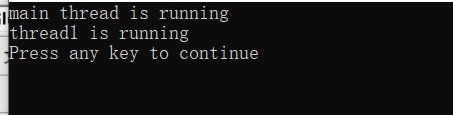
==(以上第十七课内容)==
3.线程同步
火车站售票系统模拟
#include
#include
DWORD WINAPI ThreadProc1( LPVOID lpParameter); //售票窗口1
DWORD WINAPI ThreadProc2( LPVOID lpParameter); //售票窗口2
int tickets = 1; //票号，从第一张票票号为1
void main()
{
HANDLE hThread1;
HANDLE hThread2;
hThread1 = CreateThread(NULL,0,ThreadProc1,NULL,0,NULL);
hThread2 = CreateThread(NULL,0,ThreadProc2,NULL,0,NULL);
CloseHandle(hThread1);
CloseHandle(hThread2);
Sleep(5000);
}
//线程1的入口函数（售票窗口1）
DWORD WINAPI ThreadProc1(LPVOID lpParameter)
{
while (TRUE)
{
if (tickets <= 100)//卖超过100张就结束
{
cout << "thread1 sell ticket : " << tickets ++ << endl;
}
else
break;
}
return 0;
}
//线程2的入口函数（售票窗口2）
DWORD WINAPI ThreadProc2(LPVOID lpParameter)
{
while (TRUE)
{
if (tickets <= 100)
{
cout << "thread2 sell ticket : " << tickets ++ << endl;
}
else
break;
}
return 0;
} 程序隐患：
事实上，上述程序存在隐患，比如以下情况：
当tickets为100时，线程1函数进入 if 语句块后，正好该线程的时间片到了，操作系统就会选择线程2让其进行，而这时变量tickets的值还没有加1，因此这时变量tickets的值仍是100，线程2进入它的if 语句块中，于是线程2执行卖票操作，打印票号100，然后tickets变量加1，其值变为101。如果当线程2执行完成上述操作之后，正好又轮到线程1开始运行了。而这时线程1将从原先的if 语句块开始执行，于是它输出当前的票号，而此时tickets变量的值已经是101了，也就是说，我们会看到线程1卖了号码为101的票。显然这种情况时不允许的。
上述问题的出现主要原因就是两个线程访问了同一个全局变量：ticket。为了避免这种问题的发生，就要求在多个线程之间进行一个同步处理，保证一个线程访问共享资源时，其他线程不能访问该资源。
线程需要在下面两种情况下互相通信，以实现同步：
- 当有多个线程访问共享资源，而不使资源被破坏时。
- 当一个线程需要将某个任务已经完成的情况通知另一个或多个线程时。
线程同步原理
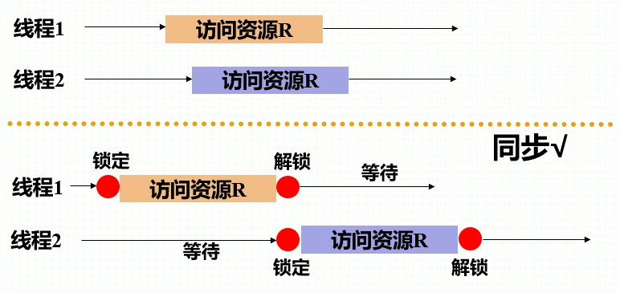
4.利用互斥对象实现线程同步
互斥对象（Mutex）属于内核对象，它能够确保线程拥有对单个资源的互斥访问权。 创建互斥对象需要调用函数：CreateMutex
互斥对象就相当于上图的那把锁。
HANDLE CreateMutex(
LPSECURITY_ATTRIBUTES lpMutexAttributes, //通常设为NULL，该线程使用默认的安全性
BOOL bInitialOwner,//可设为FALSE，创建这个互斥对象的线程不获得其所有权。
LPCTSTR lpName//指定互斥对象的名称。如果此参数为NULL，则创建一个匿名的互斥对象。
); 获得互斥对象的所有权
线程必须主动请求共享对象的使用权才能获得该所有权，这可以通过调用WaitForSingleObject函数实现。
DWORD WatiForSingleObject(HANDLE hHandle, DWORD dwMillisecond); //(锁定+等待)
HANDLE hHandle
所请求对象的句柄。本例为互斥对象句柄：hMutex。一旦互斥对象处于有信号状态，则该函数返回，接着，操作系统会将这个互斥对象设为无信号状态。如果该互斥对象处于无信号状态，则该函数会一直等待，这样会暂停线程的执行。
DWORD dwMillisecond
指定等待的时间，如果指定的时间间隔已过，即使所请求的对象处于无信号状态，该函数也返回。如果该参数为0，该函数立即返回。如果该参数为INFINTE，则该函数永远等待，直到互斥对象处于有信号状态才返回。
释放互斥对象的所有权
当线程对共享资源访问结束后，应释放互斥对象的所有权，让该对象处于有信号状态。这时需要调用函数：ReleaseMutex
BOOL ReleaseMutex(HANDLE hMutex);//(解锁) 完整的卖票程序代码:
#include
#include
DWORD WINAPI ThreadProc1( LPVOID lpParameter);
DWORD WINAPI ThreadProc2( LPVOID lpParameter);
int tickets = 1;
HANDLE hMutex;//锁定义为全局对象
void main()
{
HANDLE hThread1;
HANDLE hThread2;
hThread1 = CreateThread(NULL,0,ThreadProc1,NULL,0,NULL);
hThread2 = CreateThread(NULL,0,ThreadProc2,NULL,0,NULL);
CloseHandle(hThread1);
CloseHandle(hThread2);
hMutex = CreateMutex(NULL, FALSE, NULL);//创建锁的对象不具有锁的所有权,注意第二个参数一定要设为False
Sleep(5000);
}
//线程1的入口函数（售票窗口1）
DWORD WINAPI ThreadProc1(LPVOID lpParameter)
{
while (TRUE)
{
WaitForSingleObject(hMutex,INFINITE);//(锁上 + 等待)
if (tickets <= 100)
{
Sleep(1);
cout << "thread1 sell ticket : " << tickets ++ << endl;
}
else
break;
ReleaseMutex(hMutex);//(解锁)
}
return 0;
}
//线程2的入口函数（售票窗口2）
DWORD WINAPI ThreadProc2(LPVOID lpParameter)
{
while (TRUE)
{
WaitForSingleObject(hMutex,INFINITE);//(锁上 + 等待)
if (tickets <= 100)
{
Sleep(1);
cout << "thread2 sell ticket : " << tickets ++ << endl;
}
else
break;
ReleaseMutex(hMutex);//(解锁)
}
return 0;
}
5.利用临界区实现线程同步
临界区对象
临界区，也称关键代码段，它是指一个小代码段，在代码能够执行前，它必须独占对某些资源的访问权。
通常把多线程中访问统一资源的那部分代码当作临界区，从而达到线程同步的目的。
相关API函数
初始化临界区对象：
void InitializeCriticalSection(LPCRITICAL_SECTION lpCriticalSetion);
获得临界区对象所有权：
void EnterCriticalSection(LPCRITICAL_SECTION lpCriticalSetion);
释放临界区对象所有权：
void LeaveCriticalSection(LPCRITICAL_SECTION lpCriticalSetion);
释放临界区对象：
void DeleteCriticalSection(LPCRITICAL_SECTION lpCriticalSetion);利用临界区完成上述售票系统
#include
#include
DWORD WINAPI ThreadProc1( LPVOID lpParameter);
DWORD WINAPI ThreadProc2( LPVOID lpParameter);
int tickets = 1;
CRITICAL_SECTION cs;//创建一把锁
void main()
{
HANDLE hThread1;
HANDLE hThread2;
hThread1 = CreateThread(NULL,0,ThreadProc1,NULL,0,NULL);
hThread2 = CreateThread(NULL,0,ThreadProc2,NULL,0,NULL);
CloseHandle(hThread1);
CloseHandle(hThread2);
InitializeCriticalSection(&cs);//把这把锁初始化
Sleep(5000);
}
//线程1的入口函数（售票窗口1）
DWORD WINAPI ThreadProc1(LPVOID lpParameter)
{
while (TRUE)
{
EnterCriticalSection(&cs);//获取临界区对象所有权
if (tickets <= 100)
{
Sleep(1);
cout << "thread1 sell ticket : " << tickets ++ << endl;
}
else
break;
LeaveCriticalSection(&cs);//释放临界区对象所有权
}
return 0;
}
//线程2的入口函数（售票窗口2）
DWORD WINAPI ThreadProc2(LPVOID lpParameter)
{
while (TRUE)
{
EnterCriticalSection(&cs);//获取临界区对象所有权
if (tickets <= 100)
{
Sleep(1);
cout << "thread2 sell ticket : " << tickets ++ << endl;
}
else
break;
LeaveCriticalSection(&cs);//释放临界区对象所有权
}
return 0;
} 互斥对象与临界区的比较
互斥对象属于内核对象，利用内核对象进行线程同步，速度较慢，但利用互斥对象这样的内核对象，可以在多个进程中的各个线程间进行同步。
临界区只能在同一进程内的线程间进行同步，但使用最简单，同步速度较快，因此是实现同步化的首选方法。在使用临界区时，由于在等待进入关键代码段时无法设定超时值，容易进入死锁状态。
第九讲 动态链接库
1.动态链接库概述
动态链接库不能直接运行，不能接收消息。它们是一些独立的文件，其中包含能被可执行程序或其它DLL调用来完成某项工作的函数。只有在其它模块调用动态链接库中的函数时，它才发挥作用。
微软任何一个版本的Windows操作系统，动态链接库（DLL）都是其核心和基础。
Windows API中的所有函数都包含在DLL中。其中有3个最重要的DLL，Kernel32.dll，它包含用于管理内存、进程和线程的各个函数；User32.dll，它包含用于执行用户界面任务（如窗口的创建和消息的传送）的各个函数；GDI32.dll，它包含用于画图和显示文本的各个函数。
静态库(LIB)和动态库(DLL)
静态库：函数和数据被编译进一个二进制文件（通常扩展名为.LIB）。在使用静态库的情况下，在编译链接可执行文件时，链接器从库中复制这些函数和数据，并把它们和应用程序的其它模块组合起来创建最终的可执行文件（.EXE文件）。
在使用动态库的时候，往往提供两个文件：一个引入库和一个DLL。引入库包含被DLL导出的函数和变量的符号名，DLL包含实际的函数和数据。在编译链接可执行文件时，只需要链接引入库，DLL中的函数代码和数据并不复制到可执行文件中，在运行的时候，再去加载DLL，访问DLL中导出的函数。
使用动态链接库的好处
- 增强程序的扩展性
- 可以采用多种编程语言来写
- 提供二次开发的平台
- 简化项目管理
- 节省磁盘空间和内存
- 有助于资源共享
2.Win32 DLL的创建
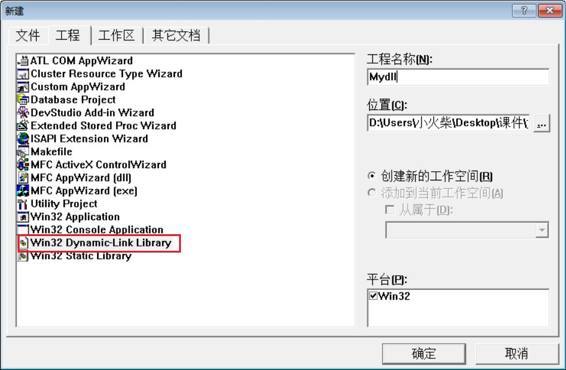
_declspec (dllexport) int add(int a, int b)
{
return a + b;
}
_declspec (dllexport) int subtract(int a, int b)
{
return a - b;
}注意：应用程序如果想要访问 DLL中的函数，那么该函数必须是已经被导出的函数。_declspec (dllexport)就是导出标识符。
3.隐式链接方式加载DLL
- 利用
extern或者_declspec (dllimport)声明外部函数 - 使用引入库文件
4.显式加载方式加载DLL
LoadLibrary函数
HMODULE LoadLibrary( LPCTSTR lpFileName);该函数的作用是将指定的可执行模块映射到调用进程的地址空间。LoadLibrary不仅能够加载DLL，还可以加载可执行模块（*.exe），当加载可执行模块时，主要是为了访问该模块内的资源，例如对话框资源、图标或位图资源。
当获取到动态链接库模块的句柄后，接下来需要获取该动态链接库中导出函数的地址。
GetProcAddress函数
FARPROC GetProcAddress( HMOUDLE hModule, LPCSTR lpProcName);该函数的作用是用来获取DLL导出函数的地址。
hModule：指定DLL模块的句柄，即LoadLibrary函数的返回值。
LpProcName：字符指针，指定DLL导出函数的名字或函数的序号。
5.DllMain函数介绍
一个Win32程序，对可执行模块来说，其入口函数是WinMain；而对DLL来说，其入口函数是DllMain，该函数是可选的。也就是说，在编写DLL程序时，可以提供也可以不提供DllMain函数。
==(以上十八课内容)==